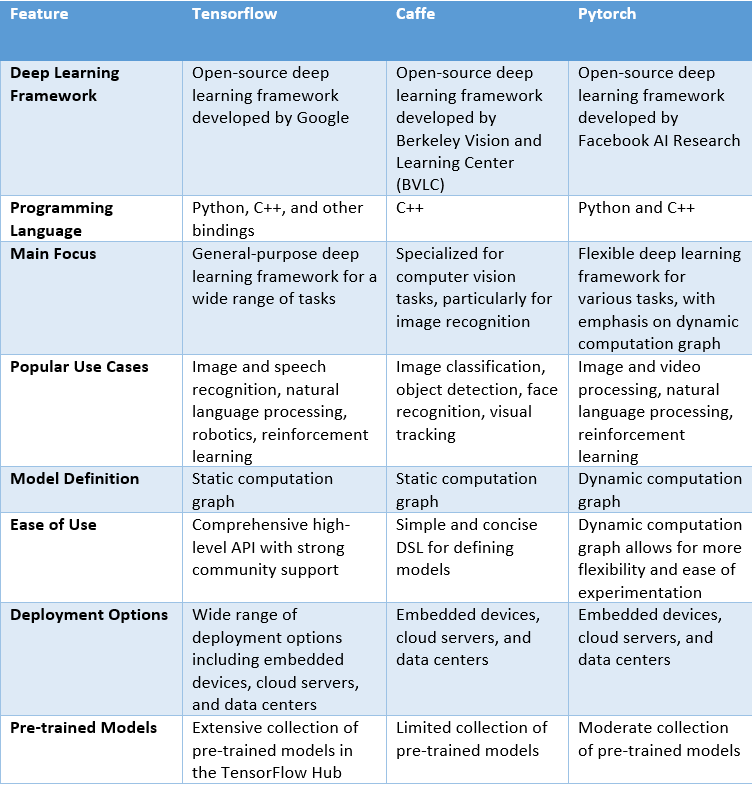
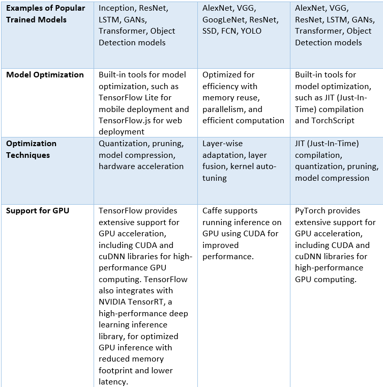
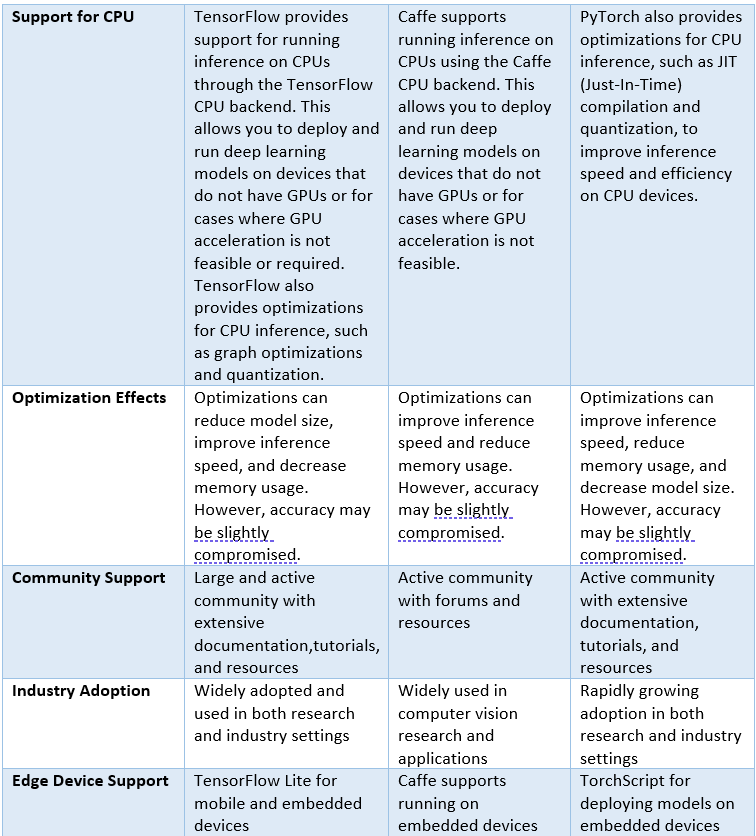

EAI frameworks
Comparision study between the available different frameworks:
  
Tensorflow:
TensorFlow is an open-source machine learning library developed by Google that provides a framework for building and training neural networks. It is widely used for a wide range of applications including image and speech recognition, natural language processing, recommendation systems, and many other tasks related to machine learning and deep learning. With TensorFlow, you can:
- Build and train neural networks: TensorFlow provides a high-level API for defining, training, and evaluating neural networks. You can create various types of neural network architectures, such as convolutional neural networks (CNNs) for image recognition, recurrent neural networks (RNNs) for sequence data, and transformers for natural language processing.
- Perform data preprocessing: TensorFlow has built-in functions for common data preprocessing tasks such as image and text data augmentation, normalization, and feature scaling. These capabilities help you prepare your data for machine learning tasks.
- Deploy machine learning models: TensorFlow allows you to deploy trained models to various platforms, including cloud servers, mobile devices, and embedded systems. This enables you to use your machine learning models in real-world applications.
- Perform transfer learning: TensorFlow supports transfer learning, which allows you to use pre-trained models as a starting point for training your own models. This can significantly speed up the training process and improve model performance, especially when you have limited data.
- Optimize performance: TensorFlow provides various optimization techniques, such as graph optimizations, model quantization, and hardware accelerations, to optimize the performance of your machine learning models for inference on different devices.
- Experiment with different machine learning techniques: TensorFlow offers a flexible and extensible platform for experimenting with different machine learning techniques and algorithms. You can implement and compare various approaches to see which one works best for your specific use case.
TensorFlow Lite:
TensorFlow Lite is a lightweight version of the TensorFlow framework that is designed specifically for mobile and embedded devices. It is widely used in various applications such as image recognition, speech recognition, and natural language processing.
It is used for deploying machine learning models on mobile and edge devices. It is a mobile-optimized version of TensorFlow, the popular open-source machine learning framework. TFLite is designed to run models with low latency and a small memory footprint, which makes it ideal for mobile and embedded devices.
TFLite provides several features to optimize and deploy machine learning models on mobile and edge devices, including model quantization, model compression, operator fusion, and GPU acceleration. It also supports a wide range of hardware, including Android and iOS devices, microcontrollers, and embedded systems.
TFLite supports a variety of machine learning models, including neural networks and other types of models. It provides tools to convert models trained in popular machine learning frameworks such as TensorFlow, Keras, and PyTorch into the TFLite format, which can be deployed on mobile and edge devices.
There are several types of optimizations that can be done with TensorFlow Lite (TFLite) to improve the performance and efficiency of machine learning models on mobile and edge devices. Some of the common optimizations are:
1.Quantization: This technique involves reducing the precision of model weights and activations from floating-point to fixed-point format. This can significantly reduce the model size and improve inference speed without sacrificing too much accuracy.
2.Model pruning: This technique involves removing redundant or less important model weights and neurons to reduce the model's size and improve its inference speed.
3.Model compression: This technique involves compressing the model's weights and activations using techniques such as Huffman coding or arithmetic coding to reduce its size and improve its inference speed.
4.Operator fusion: This technique involves combining multiple operators in the model into a single operation to reduce the number of memory accesses and improve inference speed.
5.GPU acceleration: This optimization technique involves utilizing the GPU to accelerate model inference by offloading computation from the CPU to the GPU.
6.Model caching: This technique involves caching the model's activations to reduce the number of memory accesses required during inference and improve inference speed.
7.Dynamic input shapes: This feature allows models to handle input tensors with varying sizes and shapes, which can reduce memory usage and improve inference speed.
These optimizations can be applied individually or in combination to improve the performance and efficiency of machine learning models deployed on mobile and edge devices using TensorFlow Lite.
Overall, TFLite makes it easy to deploy machine learning models on mobile and edge devices, allowing developers to create powerful and intelligent applications for a wide range of use cases.
( steps on how to intrepret a tf model )
Keras:
Keras is a high-level neural networks API that can run on top of TensorFlow, CNTK, or Theano. It is well-suited for building embedded AI applications due to its simplicity and ease of use.
PyTorch:
PyTorch is a popular machine learning framework that is widely used for research and production applications, including embedded devices. It offers a dynamic computational graph and supports various neural network architectures.
Caffe:
Caffe is an open-source deep learning framework developed by the Berkeley Vision and Learning Center (BVLC) at the University of California, Berkeley. It is specifically designed for efficient and fast training and inference of deep neural networks, with a focus on convolutional neural networks (CNNs) commonly used for image recognition tasks. With Caffe, you can:
- Train and deploy deep neural networks: Caffe provides a simple and expressive domain-specific language (DSL) for defining neural network architectures in a concise and readable format. It supports a wide range of layer types, including convolutional layers, pooling layers, fully connected layers, and more, making it suitable for various deep learning tasks such as image classification, object detection, and segmentation.
- Optimize for efficiency: Caffe is optimized for speed and efficiency, making it well-suited for training and inference on both CPUs and GPUs. It includes optimizations such as memory reuse, parallelism, and efficient computation to accelerate the training and inference process, making it a popular choice for real-time and resource-constrained applications.
- Utilize pre-trained models: Caffe supports pre-trained models, allowing you to leverage existing models that have been trained on large datasets for tasks such as image classification or object detection. This can save a significant amount of time and computational resources compared to training models from scratch.
- Fine-tune models: Caffe provides the ability to fine-tune pre-trained models on your own dataset, which is useful for transfer learning, where you can leverage a pre-trained model's knowledge on a different task and adapt it to your specific task with limited data.
- Experiment with model architectures: Caffe's flexible DSL makes it easy to experiment with different model architectures and hyperparameters. You can quickly iterate and test different model configurations to find the best performing model for your specific task.
- Deploy models to production: Caffe provides tools for converting trained models into a format suitable for deployment in production environments, such as converting models to optimized representations for inference on embedded devices or integrating models into other software systems.
Caffe2:
Caffe2 is a lightweight and modular deep learning framework that is designed for embedded and mobile devices. It is known for its high performance and is widely used in various applications such as object detection and image segmentation.
OpenCV:
OpenCV is an open-source computer vision library that includes a range of machine learning algorithms and can be used for embedded AI applications. It is widely used in various applications such as robotics, surveillance, and augmented reality.
Arm NN:
Arm NN is a software framework designed to optimize the performance of neural networks on Arm-based devices, including embedded systems. It is widely used in various applications such as image recognition and speech recognition.
Edge Impulse:
Edge Impulse is an end-to-end platform for building, training, and deploying machine learning models on microcontrollers, including Arduino boards. It offers good performance on Arduino boards for simpler use cases such as gesture recognition or vibration monitoring.
EloquentTinyML:
EloquentTinyML is a set of machine learning libraries that can be used on Arduino boards. It offers good performance for simpler use cases such as sensor data classification or voice recognition.
uTensor:
uTensor is an inference library that can be used on microcontrollers, including some Arduino boards. It offers good performance for simpler use cases such as object detection or sensor data classification.
Alfes:
Alfes is an open-source embedded AI framework designed for microcontrollers, IoT devices, and other resource-constrained systems. It supports a variety of machine learning algorithms and neural network architectures, including convolutional neural networks (CNNs), recurrent neural networks (RNNs), and long short-term memory (LSTM) networks.
One of the key features of Alfes is its lightweight design, which allows it to run on devices with limited processing power, memory, and storage capacity. It achieves this by using optimized implementations of machine learning algorithms and neural network architectures, as well as techniques such as quantization and compression to reduce the computational and memory requirements of models.
Alfes also provides a simple, easy-to-use API for developers to build and deploy machine learning models on embedded systems. It supports both C and C++ programming languages, and can be integrated with popular development environments such as Arduino and PlatformIO.
Some of the applications of Alfes include object detection and recognition, speech recognition, and anomaly detection. It has been used in a variety of projects, from smart home devices and wearables to robotics and industrial automation.
ONNX
ONNX (Open Neural Network Exchange) is an open-source model representation format that enables interoperability between different deep learning frameworks. It provides a standardized way to represent and exchange deep learning models between various deep learning frameworks, allowing models trained in one framework to be used in another framework without the need for extensive model retraining or reimplementation.
With ONNX, you can:
1.Interoperability between deep learning frameworks: ONNX allows you to convert trained models from one deep learning framework to another, making it possible to use models trained in one framework in another framework without having to retrain or reimplement the model. This provides flexibility and allows practitioners to leverage the strengths of different deep learning frameworks for different tasks or environments.
2.Model deployment in multiple environments: ONNX models can be deployed in a variety of environments, including edge devices, cloud servers, and data centers. This allows you to develop models in one framework and deploy them in different environments as needed, making it easier to scale and deploy models to production.
3.Collaborative model development: ONNX enables collaboration among researchers and practitioners who use different deep learning frameworks. It allows sharing of models between different teams or organizations, making it easier to collaborate on model development and foster innovation in the field of deep learning.
4.Model optimization: ONNX provides tools for model optimization, including optimizations for inference performance and memory usage. This can help in deploying optimized models to resource-constrained environments, such as embedded devices or edge devices, where computational resources may be limited.
5.Model visualization and debugging: ONNX provides visualization tools that allow you to inspect and debug the structure of deep learning models, helping to understand the internal workings of complex models and diagnose issues during model development and deployment.
6.Ecosystem of supported deep learning frameworks: ONNX has a growing ecosystem of deep learning frameworks that support the format, including popular frameworks such as TensorFlow, PyTorch, Caffe2, and many more. This means that you can use ONNX to exchange models between these frameworks, opening up possibilities for model reuse and interoperability.